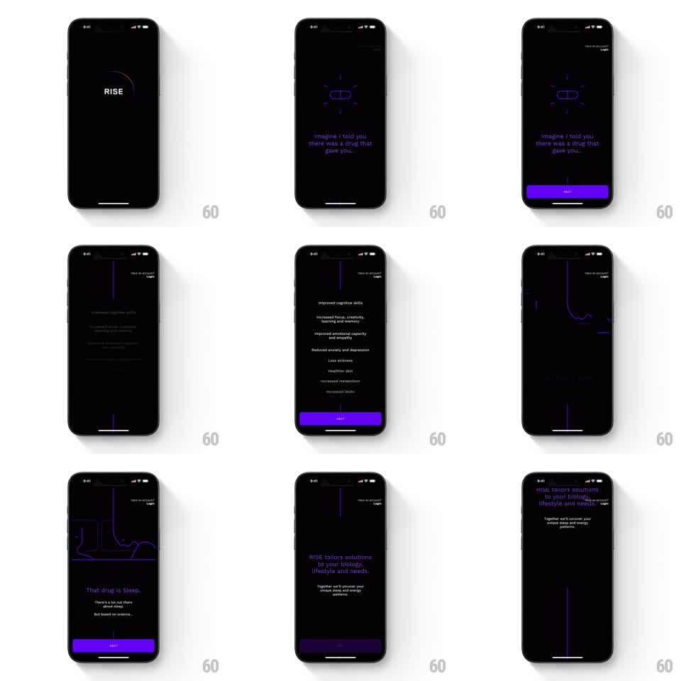

Media
Frame-by-frame

Rebuild this animation 1:1: Rise's onboarding - a single continuous glowing line that morphs between scenes: wrapping the logo, forming a pill icon, drawing down through a benefits list, and becoming a sleep waveform.

Rebuild this animation 1:1: Rise's onboarding - a single continuous glowing line that morphs between scenes: wrapping the logo, forming a pill icon, drawing down through a benefits list, and becoming a sleep waveform.
## Integration
Integration: stack-agnostic spec - springs given as stiffness/damping, timed motions as duration + curve; map every value to your framework and animation library of choice.
## Scene
Black screens with violet-blue line art and dim periwinkle text. Sequence: "RISE" wordmark with a line arc over it; a line-drawn pill icon with radiating dashes ("Imagine I told you there was a drug that gave you...", purple NEXT button); a scrolling benefits list ("Improved cognitive skills", "increased focus, creativity...", "Reduced anxiety and depression"...) with the line running down the margin; the line becoming a waveform; "That drug is Sleep."; "RISE tailors solutions to your biology, lifestyle and needs."
## Motion spec
Pattern: continuous morphing line through scene transitions.
- The line never breaks between scenes: it slides, bends, and redraws from one formation into the next (~800ms morphs, ease-in-out).
- Logo scene: the line draws the arc over "RISE" (600ms draw-on).
- Pill scene: the line reshapes into the capsule outline; dashes radiate outward with a slow pulse (opacity 0.4 to 1.0, 2s).
- List scene: the line anchors at the left margin and extends downward as each benefit fades in line by line (150ms stagger); on scroll it flexes like a plucked string then settles.
- Waveform scene: the line undulates into a sleep-graph wave, a slow traveling pulse moving along it (3s loop).
- The NEXT button rises and fills (250ms) whenever a scene completes its draw.
## Calibration
- One line. Everything it forms is the same stroke - weight and glow stay constant across morphs.
- Text stays dim and secondary; the line is the brightest thing on every screen.
## Reduced motion
Scenes crossfade; line formations appear pre-drawn.
## Don't miss
- The morph path matters: the line travels visibly between formations rather than fading out and in.
- The palette is black, one violet-blue line color, and periwinkle text - no other hues.